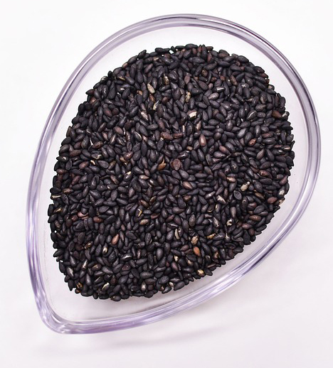
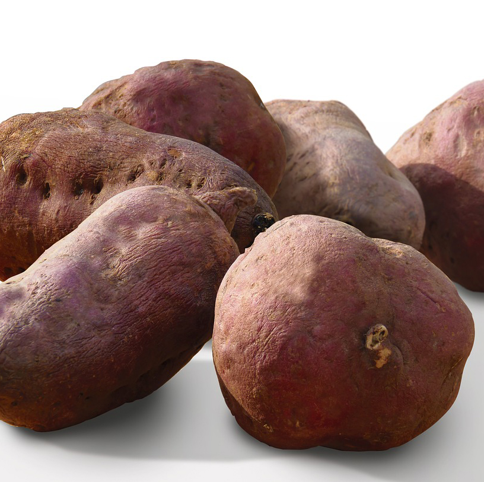

Information
성분 정보
식품의 모든 성분을 담은
성분 정보 광장
성분 정보 광장
머리가 좋아지는 음식
호두 (Walnut)
풍부한 비타민B와 칼슘, 불포화지방산
멸치 (Anchovy)
등푸른 생선류 중 DHA 함유량 1위,
시금치 (Spinach)
갑상선 호르몬을 증진시키는 요오드, 머리를 맑게 해주는
칼륨

검은 참깨(Black sesame seeds)
뇌 신경세포의 주 성분, 아미노산 함유,
살이 빠지는 음식
레몬 (Lemon)
지방의 연소를 돕는 디톡스 식품, 불필요한 식욕 억제

연어 (Salmon)
고도불포화지방산의 오메가3 지방산과 강한 항산화제의
비타민E
아몬드 (Almond)
운동 중 더 많은 탄수화물과 지방을 태우게 하는
L-아르기닌
귀리(Oats)
저지방, 저칼로리의 풍부한 식이섬유 불필요한 식욕억제의
콜레시스토키닌
몸이 튼튼해지는 음식
닭가슴살 (Chicken Breast)
기초대사량을 높이는 단백질, 근육을 만드기 좋은 영양분
달걀 (Egg)
필수 아미노산과 몸에 좋은 다양한 영양소

토마토 (Tomato)
근육 조직 향상의 카로티노이드와 풍부한 무기질

고구마 (Sweet potato)
풍부한 탄수화물과 산화방지제 성분들
젊어지는 음식
당근 (Carrot)
풍부한 비타민C와 섬유와 수분 공급
마늘 (Garlic)
유리기로부터 피부를 보호하는 향산화제와 폴리페놀
브로콜리 (Broccoli)
피부를 좋게 작용하는 향노화와 항염증, 비타민C
시금치 (Spinach)
피부의 피로감을 덜어주는 코엔자임 Q10과 베타카로틴